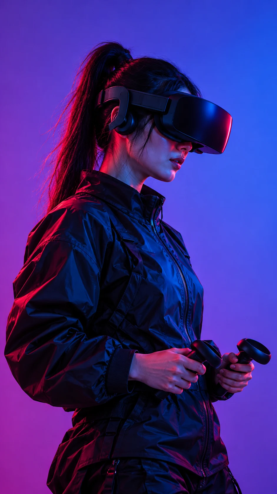
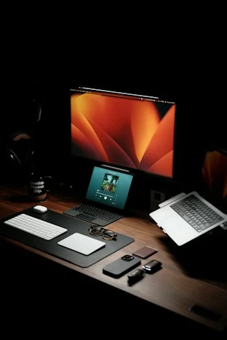

UI/UX Design
Experiências intuitivas que aproximam sua marca de quem importa.
DESIGN COM INTENÇÃO. EXPERIÊNCIAS COM IMPACTO.
Onde as ideias se transformam
em experiências digitais.
01 / O QUE FAZEMOS
Cada negócio tem uma história.
O design dá forma a ela.
Transformamos ideias em websites e landing pages com personalidade, clareza e atenção a cada detalhe. Do primeiro olhar ao último clique.
Experiências intuitivas que aproximam sua marca de quem importa.
Identidade, conteúdo e tecnologia em uma presença digital única.
Páginas com propósito, pensadas para apresentar e conectar.
02 / PROJETOS EM DESTAQUE
Explore estudos visuais que combinam
estética e novas experiências.

FEITO PARA QUEM NAVEGA
Uma experiência pensada para encantar. Interfaces que funcionam em qualquer tela, com navegação fluida e conteúdo que encontra seu lugar.
Conheça o processo ↗03 / COMO ACONTECE
Entendemos sua marca, seu público e os objetivos da página. Cada escolha começa com uma boa conversa.
Organizamos o conteúdo e construímos uma identidade visual que traduz a essência do projeto.
Refinamos as interações e a adaptação para diferentes telas, para uma experiência consistente.
04 / SOBRE O REFRAME
Reframe é um espaço para transformar ideias em interfaces claras, com personalidade e atenção à experiência de quem navega. Cada projeto começa com uma nova perspectiva.

TEM UMA IDEIA EM MENTE?
Conte um pouco sobre o que você imagina.